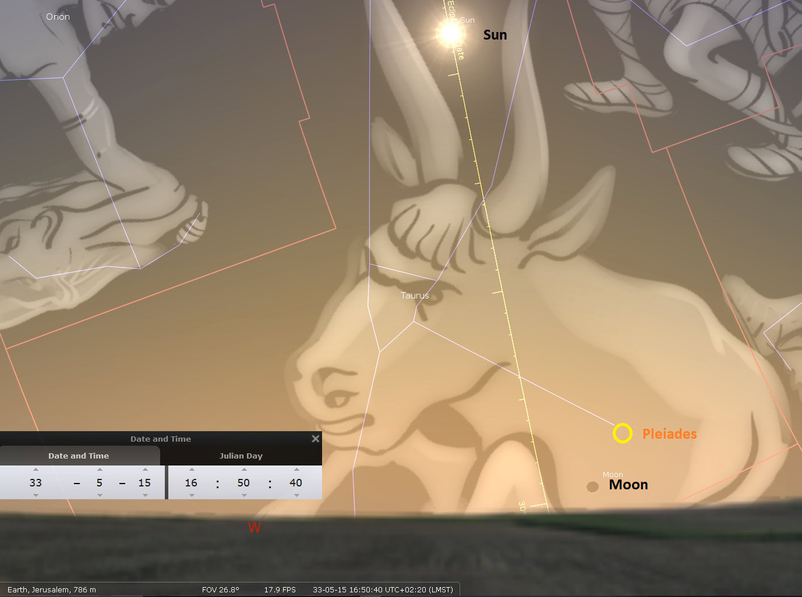
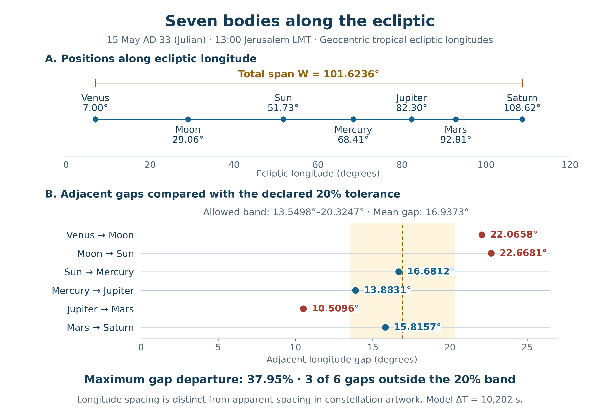
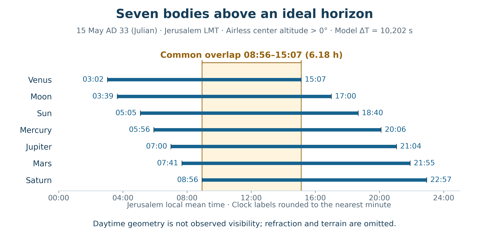

Book 1 · The Cross at the Center of Time · Chapter 16 of 18
The Morning Star, the celestial procession, and the promise of new creation
“I, Jesus, have sent My angel to give you this testimony for the churches. I am the Root and the Offspring of David, the bright Morning Star.”
— Revelation 22:16
The last chapter followed a measure from the covenant sign in Christ's flesh to the offering of that flesh upon the Cross. The chart in Chapter 15 gives the whole midnight-to-midnight frame its exact length: 11,781 days, or 77 × 153, from the opening of January 1, AD 1 to the opening of April 4, AD 33. Crucifixion Friday is the final complete civil day within that frame. Noon stands within it, twelve hours from either surrounding midnight. Friday noon is a point within the final day of that count; it is not the count's endpoint.
Now I lift my eyes from the calendar to the heavens. Can the creation whose time we have measured also bear a figure of the Lamb's victory? Can the sky over the season of His death, resurrection, and ascension be read in the light of the One who calls Himself the bright Morning Star?
I believe it can. My proposal reaches beyond a comparison invented for illustration: the actual Cross may order the history and measures of the creation that receives its Redeemer. Throughout this book I approach John's testimony as inspired Scripture, seeking to ride upon the eagle's wings and see the earthly events within their heavenly reach. A sign may belong to that reach even when no one on earth sees or understands it. Its first audience may be the angelic host, with its meaning disclosed to humanity through revelation. The movements must still be calculated, the biblical images heard in their own words, and the chosen dates identified. Those particulars help us examine the witness; human recognition does not determine whether heaven can bear it.1
In this chapter
- The scroll and its two witnesses
- The Morning Star and the season of redemption
- The darkness and the Passover Moon
- Forty days and the chosen Ascension scene
- A measured procession
- Above the horizon, hidden in daylight
- From the Lamb to the royal star
- The train of victory and the defeated powers
- The counterfeit and the contested creation
- Noah and the anniversary of a renewed earth
- The witness of the measured scene
- Hidden glory and the promised return
- Sources and notes
The scroll and its two witnesses
John sees a scroll in the right hand of the One seated on the throne. It bears writing on both sides and is sealed with seven seals. The Lamb who was slain is worthy to take it and open it. The meaning of history belongs to Him, and the worship that follows extends through heaven, earth, beneath the earth, and the sea.2
I read the two written surfaces as a fitting image for the relationship between God's spoken revelation and the witness of His creation. Scripture supplies the intelligible account of redemption. The heavens, seasons, and measures supply another field in which its significance may become visible. Revelation does not itself assign these meanings to the two sides of the scroll; the joining is the theological reading I bring to John's image.
Psalm 19 gives that joining a biblical setting. It begins with the heavens declaring God's glory and turns to the instruction of the LORD. The creation speaks universally; the law names, directs, restores, and enlightens. Their Maker is one. I therefore seek a correspondence in which the word gives the celestial figure its meaning.
The audience is greater than humanity alone. Peter speaks of the things into which angels desire to look. Paul speaks of God's wisdom being made known through the church to rulers and authorities in the heavenly realms. John sees the heavenly host gathered around the Lamb and hears the worship of the whole creation. Christ's death concerns the universe, and His victory can be proclaimed before heavenly beings through a created testimony that men have yet to recognize. I suggest that the sky of this season belongs to such a proclamation.3
Luke records the earthly Ascension and the angelic promise in Acts; John's inspired Revelation opens the heavenly view of the Lamb's victory. I bring these witnesses together as I follow the same Lord through them. The eclipse and procession considered here need not have been understood by the people beneath them to participate in that victory.
This is also the place of the Repository's Star Script principle. Its celestial and mythological associations belong to the meaning of the work, while the arithmetic retains its stated units and operations. A proposed star image cannot repair a failed calculation. An exact calculation, in turn, need not exhaust the significance of the image it measures.4
The Morning Star and the season of redemption
Venus offers a natural celestial companion to Christ's title. It appears as the brilliant evening or morning planet on either side of its passage near the Sun. I contemplate that disappearance and return through the death and resurrection of Christ. The title in Revelation supplies the theological center; the association with Venus is my reading of the created image.
The same distinction applies at the beginning of Christ's earthly life. Proposed Star-of-Bethlehem reconstructions involving Venus, Jupiter, and Regulus in 3–2 BC can be considered as additional celestial hypotheses. They do not change the received December 25, 1 BC birth and January 1, AD 1 circumcision framework used in this book. Matthew's account of Herod's order against boys two years old and under does not establish an exact two-year interval between Christ's birth and the Magi's arrival. It cannot by itself reconcile every proposed astronomical date. The received chronology and the historical reconstruction retain the roles already given them in Chapters 8 and 15.5
For AD 33, we can calculate a more specific seasonal sequence. Venus passed through inferior conjunction shortly before the spring equinox and had become a morning object by the adopted Resurrection Sunday. The two spring events were close, but they were not simultaneous.
Table 1 — Two spring events in the declared AD 33 model
| Calculated event | Julian date | Approximate Jerusalem mean solar time |
|---|---|---|
| Venus–Sun inferior conjunction in ecliptic longitude | March 21 | 14:29 |
| Spring equinox | March 22 | 18:21 |
The conjunction precedes the equinox by approximately 27.88 hours. The calculation therefore gives a seasonal companionship rather than one exact instant at which the equinox, a lunar New Year, and every solar-calendar beginning coincide. Our selected evening-based Enochian year began earlier, on March 17. Each beginning keeps its own definition.6
By April 5, Venus lay about 22° from the Sun. In the declared Jerusalem horizon model, when the Sun's center was 6° below the horizon, Venus stood about 10° above it. Its computed magnitude was about −4.46. This is a favorable geometry for a bright morning planet, subject to the actual atmosphere and horizon. It gives substance to the Morning Star comparison. Its place in the heavenly witness need not depend on someone having left a record of that particular dawn.7
The image moves me because it concerns a real cycle in the heavens. The planet has passed through its near-Sun interval and stands before the sunrise. I see in that movement a created figure of the One whose rising brings the new day. The Resurrection itself remains the act proclaimed by the witnesses; Venus supplies the celestial accompaniment I propose.
The darkness and the Passover Moon
The Crucifixion sky requires particular care. The Gospels place darkness over the land from about the sixth to the ninth hour. Christ's death follows the cry near the ninth hour. Within this book's preferred chronology, that is Friday, April 3, AD 33.8
NASA's eclipse catalog confirms a partial lunar eclipse on that Julian date. A lunar eclipse occurs at full Moon, when the Moon passes through the Earth's shadow. It cannot cause midday darkness over the land. The reported darkness and the evening eclipse are different events, joined in my contemplation of the Passion but not by one physical mechanism.
The eclipse reached its greatest phase before the Moon rose at Jerusalem. For people in Jerusalem, the observational question is how much of the ending eclipse they could discern above the local horizon. The wider question I am asking concerns its place in the clock of heaven: could the event herald Messiah's death before the heavenly powers even if its earthly witnesses failed to perceive it?
Table 2 — The April 3 eclipse and a modeled Jerusalem horizon
| Event | Approximate UT | Approximate Jerusalem mean solar time |
|---|---|---|
| Greatest lunar eclipse, NASA catalog | 14:48 | 17:09 |
| Apparent upper limb of Moon rises, ideal-horizon model | 15:57 | 18:18 |
| Moon leaves Earth's umbra, NASA contact | 16:13 | 18:34 |
The model puts the Moon's first apparent limb above an ideal horizon roughly sixteen minutes before the umbral phase ends. That is a geometric opportunity, not a recovered observation. A low Moon must be seen through a long atmospheric path; haze, extinction, hills, refraction, and the uncertainty in the ancient rotation of the Earth all matter. Published studies disagree about whether a recognizable partial eclipse could have been seen from Jerusalem at moonrise.9
At greatest eclipse NASA gives an umbral magnitude of 0.5764. This measures the fraction of the Moon's diameter immersed in the umbra, not the fraction of its surface area, and it is not the magnitude at Jerusalem moonrise. The distinction prevents the impressive global maximum from being transferred to a much later local scene.
Joel's blood-Moon language and Peter's use of it at Pentecost belong within a larger prophetic proclamation. I hear a resonance between that language, the Passover Moon, and the Cross. The astronomical event occurred whether or not its ending phase was recognizable from Jerusalem or its vicinity. I suggest that it could bear witness to Messiah's death before the angelic host, whose place within redemption's audience John allows us to see.10
Its position at the threshold of sunset and moonrise may itself belong to the symbolism. The partial eclipse comes to the edge of local visibility as the day yields to evening. A sign so placed can mark a boundary that earthly eyes only partly apprehend. I contemplate that veiled testimony through the Lamb whose death reaches every realm of creation. Whether local people saw a conspicuously eclipsed or reddened Moon remains a historical question; it need not decide whether the event was intended as a heavenly sign.
Forty days and the chosen Ascension scene
Acts tells us that the risen Jesus appeared to His disciples over forty days. It describes His ascent, the cloud that took Him from their sight, the two men in white, and the promise that He will return. It also describes the distance from the Mount of Olives to Jerusalem as a Sabbath day's journey.11
The expression gives a familiar measure of distance. I also suggest that its Sabbath wording is an intentional temporal clue. Scripture's words are carefully chosen, and Luke may preserve the approach of the Sabbath in this brief notice without interrupting the account with a fuller timetable. Within the Friday construction adopted here, I receive it as a quiet indication of the disciples' return as the Sabbath approaches. This is a cumulative reading of the wording, the forty-day count, and the sky, rather than an explicit clock notice in the verse.11
The two closing conventions already used in this book remain available. Counting Resurrection Sunday, April 5 as the first included date gives Thursday, May 14 as the fortieth. Adding forty full elapsed days to April 5 gives Friday, May 15. The sky scene considered here belongs to the latter construction. I favor its Friday setting together with the proposed Sabbath clue, while retaining May 14 as the traditional included-date alternative.12
For the tour that follows, I choose May 15 at 13:00 Jerusalem mean solar time. This is close to the clock shown on the supplied overview. Mean solar time is defined here from Jerusalem's longitude; it is not a modern time-zone label or a recovered clock reading from the Ascension. Ancient dates throughout the chapter use the Julian calendar.
We can therefore examine a definite sky within the proposed Friday setting. The 13:00 reference lets us measure its form while leaving the Ascension's precise hour unassigned.

The screen reads May 15, AD 33, 12:58:12, using Jerusalem local mean solar time. Daylight is suppressed. The seven classical bodies extend from Venus in Aries to Saturn in Cancer under modern constellation boundaries; Regulus and Uranus extend the larger scene into Leo. The plate shows modeled positions and artwork, not a naked-eye daytime observation.
The closer supplied view helps locate the Moon and Pleiades that will figure in the reading below. Its later clock is kept explicit.

This closer plate shows a later moment, 16:50:40, rather than the overview's near-13:00 scene. It helps the eye locate the Moon, cluster, and Taurus artwork. It is not a second simultaneous view of the reference instant or evidence that all seven bodies then remained above the horizon.

A measured procession
The seven classical wanderers are the Sun, Moon, Mercury, Venus, Mars, Jupiter, and Saturn. Their traditional grouping allows us to contemplate a sevenfold train. At the selected instant their order along increasing ecliptic longitude is:
Venus → Moon → Sun → Mercury → Jupiter → Mars → Saturn.
In calling Venus the leader, I mean the first body in that directed sequence. This describes the chosen order of longitude; the bodies have their own motions and different rising and setting times.
Table 3 — Seven-body geometry at May 15, AD 33, 13:00 Jerusalem mean solar time
| Body | Approximate ecliptic longitude | Gap to the next body |
|---|---|---|
| Venus | 7.00° | 22.07° |
| Moon | 29.06° | 22.67° |
| Sun | 51.73° | 16.68° |
| Mercury | 68.41° | 13.88° |
| Jupiter | 82.30° | 10.51° |
| Mars | 92.81° | 15.82° |
| Saturn | 108.62° | — |
These are approximate apparent geocentric tropical ecliptic longitudes, measured from the equinox of date. They are coordinates, not constellation names: a tropical 30° sector must not be silently substituted for a constellation boundary. A separate JPL calculation places Venus in Aries, the Moon and Sun in Taurus, Mercury and Jupiter in Gemini, and Mars and Saturn in Cancer. The supplied artwork gives a wider pictorial setting.13
The Venus-to-Saturn span is 101.62°, confirming the approximately 101.6° arc in the original proposal. The Moon lies 49.33% of the way from Venus to the Sun in longitude, close to the midpoint and well within the central half of that arc. Those are substantial features worth retaining.
The six gaps, however, are unequal. Their mean is 16.94°. If each gap must be within 20% of that mean, the permitted range is about 13.55° to 20.32°. The first two gaps are too large, and the Jupiter–Mars gap is too small. To measure the largest departure from the mean gap, I use the formula:
E = maximum absolute departure from the mean gap ÷ mean gap.
The score is approximately 37.95%, exceeding the proposed 20% limit. A one-minute scan across the full local-mean May 15 finds no passing sample; the smallest score is approximately 37.69%. The image remains a procession spread across the ecliptic. The procession therefore does not meet a test requiring every gap to lie within 20% of the mean.14

The upper panel plots the seven bodies in directed ecliptic order. The lower panel compares all six gaps with their mean and a band extending 20% above and below it. The span is 101.62°, and the Moon lies near the midpoint between Venus and the Sun. The gaps do not all fall within that band. The calculation and independent JPL comparison are documented in the astronomical evidence and methods supplement.

The distinction protects the meaning of the image. I find the sequence striking because of the company it presents and the scriptural themes through which I read it. The meaning need not depend on calling unlike intervals equal.
Above the horizon, hidden in daylight
There is also a real interval during which all seven bodies stand above a common Jerusalem horizon. In the declared ideal-horizon calculation, Saturn's geometric center rises last at about 08:56, and Venus's center sets first at about 15:07. The overlap is approximately six hours and eleven minutes, in Jerusalem mean solar time.15

The shaded interval is the overlap of seven calculated above-horizon intervals. These are geometric centers with refraction omitted. Terrain and atmospheric visibility are not modeled. The Sun's presence makes this a daytime configuration; suppressing daylight in software reveals geometry that a casual observer would not see as the illustrated star field.

The approximate six-hour relation thus has an astronomical basis as a horizon overlap. I place it beside the proposed Sabbath cue as part of the scene's temporal setting. Acts does not specify an Ascension duration of six hours, and the overlap does not create an interval of equal spacing. Its significance in the proposed sign can be considered with those measurements intact.
The supplied plates also record different moments, heights, and display settings. Their clock labels can help us locate a scene, but two selected screenshots do not establish the exact beginning and end of the common horizon window. For that we need one declared calculation with consistent definitions.
The concealment belongs positively within my reading. The cloud hid Jesus from the disciples' sight, and the Sun's brightness concealed most of the celestial company. The procession need not have been noticed, much less understood, by those beneath it. I suggest that its meaning could nevertheless have been manifest to the heavenly host. The eclipse at the edge of earthly visibility and the procession hidden in daylight may thus share one quality: a testimony present in creation whose significance is opened by revelation.
From the Lamb to the royal star
We may now follow the procession through its proposed meanings. Venus in Aries gives the first image: the Morning Star beside the Ram, contemplated as the risen Lamb. Revelation has already joined the slain Lamb's victory with authority to open the scroll. The sky offers me a setting in which to consider that victory.
The Pleiades stand nearby in Taurus. Scripture itself names this cluster in Job, so its presence belongs to the biblical world of the heavens. I associate its familiar sevenfold appearance with the seven stars in Christ's hand, but John's own explanation must remain audible: the seven stars are the angels of the seven churches, and the lampstands are the churches. He does not explicitly call those stars the Pleiades. Their placement to one side of a selected figure also depends on the artwork and the direction in which the figure faces; it cannot by itself demonstrate the right hand's possession.16
The Sun and Moon in Taurus also recall Joseph's blessing. Deuteronomy 33 gathers the bounty of heaven, the Sun's harvest, the seasons or lunar cycles, and the strength of the firstborn bull. The Hebrew and Greek expressions behind verse 14 carry the month or lunar-cycle language; the BSB main text uses seasons. Joining those images to Taurus is a typological reading of Joseph's blessing, rather than an explicit prediction of planetary positions on an Ascension date.17
Within the larger biblical story, Joseph receives a heavenly calling through dreams, suffers among his brothers, and becomes an instrument of life. His blessing therefore gives this part of the sky a fitting place in my contemplation of the Son who passes through humiliation into rule.
The Woman of Revelation 12 brings a further layer. She is clothed with the Sun, has the Moon under her feet, and wears a crown of twelve stars. I read a generational movement through this image: Israel brings forth the Messiah, and through His saving work the Messiah brings His church to life. The Pleiades may carry this further Woman-and-Church figure within the celestial scene. Their familiar sevenfold appearance can recall the seven churches while John's twelve-star crown retains its own stated number. I am joining layers of the vision, rather than turning those two numbers into an identical star count.18
Mercury and Jupiter then stand in Gemini. Their pairing suggests the witness motif: the two men at the Ascension, the apostolic mission, and Revelation's two witnesses. Acts 14 gives the cultural link by recording that the Lystrans called Barnabas Zeus and Paul Hermes, the Greek counterparts of the names associated with Jupiter and Mercury. Yet the apostles rejected the attempted worship and directed the crowd to the living God. I use the names as a cultural correspondence, keeping their protest within the picture. The passage does not commission them as planetary gods.19
The train continues through Mars and Saturn. Beyond its seven classical members stands Regulus, the royal star in Leo; farther along lies Uranus. In the computed longitude order, Saturn — Regulus — Uranus does place the royal star between those two planets. Uranus was present whether or not humanity could identify it; the heavenly witness need not await human discovery or naming. Modern calculation lets us place it within this larger scene. Adding Regulus and Uranus changes both the body count and the arc, giving nine selected points rather than the seven measured in Table 3.20
I read the movement from the Lamb toward the royal star as a figure of victory. The Lamb who was slain has conquered as the Lion of Judah. The image's force comes from that biblical union of sacrifice and kingship.
The train of victory and the defeated powers
Paul writes of Christ ascending, leading captives, and giving gifts. Elsewhere he describes the disarming of rulers and authorities and their public defeat. Peter places the imprisoned spirits within a passage that moves through Noah to the ascended Christ, to whom angels, authorities, and powers have been subjected.21
These passages allow a procession with more than one relationship to the Victor. The redeemed receive life and gifts; the hostile powers are subjected. I see both companies within the scope of Christ's triumph. The sky can carry that breadth as a contemplative image, although positions in a chart do not settle every question about the captives of Ephesians or the spirits of First Peter.
Greek myth provides names for another comparison. Kronos, associated with Saturn, belongs to the Titans; Ouranos, reflected in the modern name Uranus, is their father. They should not both be described simply as Titans. Their ancient stories of dethroned powers give a cultural background for my proposed image of conquered rule. The claim that these particular planets are the imprisoned spirits remains my interpretive joining.22
Paul's own procession image also prevents triumph from becoming an easy earthly spectacle:
“For it seems to me that God has displayed us apostles at the end of the procession, like prisoners appointed for death. We have become a spectacle to the whole world, to angels as well as to men.”
— 1 Corinthians 4:9
Here the apostles themselves stand at the end of the procession, bearing humiliation in the service of Christ. The verse gives the chapter its cosmic audience and its cost. It does not identify the rear of our diagram with a particular company of planets. Victory comes through the Crucified, and His witnesses continue to bear the form of His giving.23
The counterfeit and the contested creation
Revelation sets the Lamb's kingdom against powers that imitate and oppose it. The Dragon stands at the shore; the beast rises from the sea and receives the Dragon's authority; another beast appears with horns like a lamb and a voice like a dragon. Later the woman rides the scarlet beast. These images belong to the war announced between the serpent and the woman's offspring.24
Constellation artwork offers a field in which to consider such antitheses. Cetus supplies a sea-monster image, Taurus a bull, and Aries a ram. I can read them as a contrasting tableau beside the images of Lamb, witness, and royal victory. Their apparent relation to the horizon changes with the chosen hour, and Revelation does not name these constellations as its characters. The correspondence is a proposed celestial reading of the conflict.
Two Cretan stories give the bull different roles. Zeus takes the form of a bull and carries Europa; their children include Minos. In a separate story, Pasiphae's union with Poseidon's bull produces the Minotaur. These are related traditions about power and desire, but the bull that carries Europa and the Minotaur are not successive forms of the same creature.25
I find in those stories material for contemplating deceptive beauty, corrupted power, and monstrous dominion. That is a Christian reading brought to the myths. A white bull alone does not determine the identity of Revelation's first white-horse rider, especially when Revelation later presents Christ Himself on a white horse. Each scene must be read through its own description.
The Pleiades likewise have a varied ancient reception. Mesopotamian sources associate the cluster with the divine Seven and a designation rendered Bristle. That material does not support a single uniform judgment that the cluster always meant seven evil demons. Nor does the designation itself prove that Revelation's Harlot sits upon the mane of Taurus. John explains the beast's seven heads as mountains and kings and identifies the woman with a ruling city. A proposed seven-star echo must remain alongside those explanations, rather than replacing them.26
The positive antithesis remains. The creation can be misread and its powers worshiped, while the Lamb restores its meaning to the Creator. The same heavens that furnish myths of domination can be contemplated under the rule of the One who gives Himself. This is the theological movement I seek through the celestial images.
Noah and the anniversary of a renewed earth
Peter's joining of Noah, salvation, and the ascended Christ brings us back from the constellations to the calendar. Genesis marks several distinct moments: the ark rests on the seventeenth day of the seventh month; the surface is dry by the first day of the first month; and the earth is fully dry by the twenty-seventh day of the second month. The command to leave the ark follows that final notice.27
The second-month twenty-seventh offers a powerful image of new creation. The enclosed company comes forth into a world received again from God. I place that deliverance beside Christ's Ascension and the life of the church that follows it.
The anniversary depends on the calendar row. Under the earlier lunar example used in Chapter 14, with a thirty-day Nisan and an evening boundary, May 15 noon falls on II 27. Under the later lunar example with the same month length, it falls on II 26. Shortening Nisan to twenty-nine days advances either label by one. The second-month label therefore belongs to a declared lunar construction; it is not a common date shared by all the solar and lunar rows.28
This is the appropriate setting for the Repository's retained Iyar 27 Ascension typology. It gives the proposal a canonical home, while the present chapter states which civil-date and month-length construction is being used. The traditional May 14 closing and the full-forty-day May 15 closing continue to differ.
The ark's paired creatures also invite the theme of witness. Genesis explicitly describes their entry two by two; its account of departure describes them by their kinds. I carry the pair motif from the ark story into the celestial and apostolic comparison without making the exit verse describe a procession in words it does not use.
Rabbinic discussion preserves competing spring and autumn settings for the Flood and a connection with the Pleiades. Those traditions are valuable companions to the inquiry. They do not form one uncontested calendar proving both Nisan 17 as the Resurrection anniversary and Iyar 27 as the Ascension anniversary. The native seventh-month date, the selected year beginning, and the Christian typological application must each be named.29
Even with those distinctions, the image gathers force. Noah's company emerges after judgment; Christ's people receive a new beginning through His death, rising, and exaltation. The heavens over the chosen scene can be contemplated as a train of deliverance because the scriptural story already gives the deliverance its meaning.
The witness of the measured scene
The measured scene gives us a 101.62° seven-body span, Venus first in the directed order, a Moon close to the midpoint between Venus and the Sun, the Sun and Moon in Taurus, Mercury and Jupiter in Gemini, and approximately six hours with the seven bodies above the same horizon. I read these features through the Lamb, the church, the witnesses, the subjected powers, and the renewed creation.
The calendar measures used elsewhere in this book remain distinct: 1,260 days in the common 360-day form and 1,274 days in the 364-day solar form. They cannot be exchanged as elapsed history.30
The calculations let another reader examine the scene. The heavenly meaning I propose reaches beyond what a person on earth could have seen or understood. I allow the stronger possibility that the actual saving act stands at the center of creation’s order.
Hidden glory and the promised return
The disciples watched Jesus ascend until a cloud took Him from their sight. They received a promise of His return and went back to Jerusalem. Their calling continued on earth while His authority extended through heaven.31
I see an answering image in the daytime heavens. The bodies remain in their places when the brightness of the Sun conceals them. Their concealment does not undo their reality or require their significance to be confined to an earthly audience. The supplied software plates let us examine a company that may already have proclaimed the Lamb's victory before the heavenly powers. From the eagle's view, people below may need revelation to enter a meaning that heaven already beholds. I contemplate that hidden company beneath the promise that the One concealed from sight will be seen again.
The daily turning of the sky can remind us of that promise, although the seven bodies do not all rise at dawn and set at dusk. Their motions have different periods, and the particular arrangement changes. What abides is the Creator's faithfulness and the Lord's word.
The passage from the last chapter to this one has therefore enlarged the field of witness. The covenant sign, the days of His flesh, the Cross, the Passover Moon, the Morning Star, and the proposed celestial procession can be considered together. I seek the same Lord through them all: the Lamb whose sacrifice is the ground of His reign.
The next chapter turns toward the manner of John's seeing. How does he gather different witnesses into one vision while preserving their particular voices? How do the earthly signs and heavenly images serve the testimony he gives? Having measured and looked, I now want to attend more closely to the inspired way in which he teaches us to read.
Sources and notes
1. Chapter 15 and the supplied midnight chart govern the opening count: January 1, AD 1 at 00:00 to April 4, AD 33 at 00:00 equals 11,781 full civil days; April 3 noon is 11,780.5 days after the opening. These are declared civil-clock references, not recovered circumcision or death hours. See File 00, §§3.9, 8.5. Return to text
2. Revelation 5:1–14. The two-sided scroll's proposed special/general-revelation reading is the author's interpretation. Compare Ezekiel 2:9–10; Revelation does not explicitly define the surfaces in those terms. Return to text
3. Psalm 19; 1 Peter 1:12; Ephesians 3:10; Revelation 5:11–14. The heavenly audience and cosmic scope are explicit. The author proposes that the particular eclipse and planetary configuration participate in that witness, potentially understood by heavenly beings without contemporary human recognition. These passages do not report an observation of this particular configuration. Return to text
4. File 21, Part VI, Source §21, Axiom 21.1. File 31, §6.3 concerns a separate exploratory solar resonance; it does not certify this planetary calculation. Return to text
5. Revelation 22:16; Matthew 2:1–16. Matthew places the birth in Herod's reign but does not supply an exact birth date or a Venus identification. The proposed 3–2 BC sky sequence is not verified or used as a chronological premise here. File 13, §§6–7 retains a separate historical Nativity state; this book's received framework remains explicit. Return to text
6. Chapter calculation: apparent geocentric tropical ecliptic longitude of the Sun equals 0° at the equinox; Venus and Sun have equal longitude at the selected inferior conjunction. The latter is a longitude conjunction, not zero angular separation; Venus has appreciable ecliptic latitude. The conjunction's computed TT instant is March 21, 14:57:53; the equinox's is March 22, 18:50:24. Fixed ΔT = 10,202 seconds converts TT to UT; longitude 35.235° E adds 2h 20m 56.4s to UT for Jerusalem mean solar time. Printed local clocks are rounded estimates. See the astronomy evidence and reproducible script supplied with this chapter; Swiss Ephemeris documentation; JPL Horizons manual. Return to text
7. The April 5 model uses Jerusalem 31.778° N, 35.235° E, altitude 786 m, geometric topocentric solar-center altitude −6°. Approximate local mean solar time is 05:21, Venus altitude 9.96°, solar elongation 21.99°, visual magnitude −4.46. Neither a first sighting nor exceptional brightness relative to every other Venus apparition is inferred. An unrecorded human sighting is not a prerequisite of the proposed heavenly symbolism. Return to text
8. Mark 15:33–37; Luke 23:44–46. Noon marks Christ on the Cross and the beginning of the reported darkness, not His death. AD 33 remains preferred in this book; AD 30 is a retained alternative, not decided by this scene. Return to text
9. NASA century catalog and April 3, AD 33 contact plot: greatest 17:37:53 dynamical time, or 14:47:51 UT with ΔT 10,202 s; U4 16:12:57 UT. The local apparent-limb model uses 927 hPa, 15°C, standard refraction and a level horizon, with no terrain or extinction. Its geometric center rises about 18:22 mean solar time. NASA's estimated ΔT uncertainty gives roughly 4.26 minutes at one standard deviation for AD 33, not a hard bound. Compare Schaefer 1990, pp. 64–65 and Humphreys and Waddington 1992, §VIII, pp. 346–347, whose local-visibility assessments differ. Return to text
10. Joel 2:28–32; Acts 2:16–21; Revelation 5:11–14. NASA's catalog key defines umbral magnitude. The interpretation of prophetic blood-Moon language and the eclipse as an intended heavenly sign remains distinct from reconstructing local color and visual detectability. The author proposes that its placement near the sunset/moonrise threshold may itself carry symbolism, whether or not contemporary local people recognized the eclipse. Return to text
11. Acts 1:3, 9–12. The Sabbath day's journey clause ordinarily describes the mount's distance from Jerusalem. The author also reads the carefully chosen Sabbath wording as an intentional temporal clue fitting an approaching Sabbath in the adopted Friday scene. That further force belongs to the cumulative interpretation, rather than an explicit weekday, clock hour, or six-hour duration stated in the verse. Luke's Acts supplies the earthly account; John's Revelation supplies the inspired heavenly vantage through which the author reads its wider significance. Return to text 1 · Return to text 2
12. April 5 to May 14 is 39 elapsed date intervals or 40 included dates; April 5 to May 15 is 40 elapsed intervals or 41 included dates. These are alternative constructions, not two recorded Ascensions. See current Chapters 8, 10, and 14. Return to text
13. Table 3 uses pyswisseph 2.10.3.2 / Swiss Ephemeris 2.10.03, explicit Moshier calculation, fixed ΔT 10,202 s. A separate NASA/JPL Horizons DE441 check at the same TT instant agrees within approximately 0.018° in longitude; the largest difference is the Moon. Printed hundredths describe this chosen model, not ancient observational accuracy. Horizons supplies the separate modern IAU constellation labels. Requests, responses, comparisons, and the full-minute scan accompany the chapter. See Horizons API documentation. Return to text
14. W = 101.6235803°; mean = W/6 = 16.9372634°; E = max(|gap − mean|)/mean = 0.3794979. The 20% interval is 13.5498107°–20.3247161°. The 1,440 one-minute samples cover local 00:00 through 23:59; a local numerical refinement gives the reported minimum near 15:13. This is a sampled numerical test with refinement, not an assertion of an analytically proven continuous minimum. Return to text
15. Model: geometric topocentric centers, no refraction, same Jerusalem site and ΔT. Saturn rises at about 08:56:03 and Venus sets at about 15:06:47 local mean solar time; overlap 6.1788 hours. Approximate seconds document the numerical model and are not recovered first-century clocks. This horizon definition differs from Table 2's apparent upper-limb definition. The overlap may participate in the author's proposed temporal symbolism without becoming a duration stated by Acts. Return to text
16. Job 9:9; Job 38:31; Revelation 1:16, 20. The Pleiades association is proposed; verse 20 explicitly supplies angels and lampstands/churches. Return to text
17. Deuteronomy 33:13–17. Verse 14 BSB uses seasons without a printed Moon footnote in the retained source. The Hebrew month/lunar-cycle expression and Greek months wording are separately documented in the primary-source evidence. Verse 17 supplies the firstborn-bull comparison. The Taurus application is typological. Return to text
18. Revelation 12:1–6, 17. The twelve-star crown, child caught up to God, and remaining children are John's stated imagery. The author reads a further generational layer in Israel bringing forth Messiah and Messiah bringing His church to life. The proposed Pleiades/Woman/Church association does not identify the familiar sevenfold cluster with the stated twelve-star crown as one literal star count. Return to text
19. Acts 14:11–18; Acts 1:10–11; Revelation 11:3–12. The different scenes are joined typologically. Acts records rejected divine names at Lystra, not a planetary apostolic commission. Return to text
20. Reference longitudes in the chosen model: Saturn 108.62°, Regulus 122.60°, Uranus 137.53°. Regulus and Uranus are additional objects, outside the seven classical wanderers. The larger Venus-to-Uranus arc is approximately 130.53°, with nine selected points and eight gaps; the 101.62°/six-gap measure applies only to the classical seven. Uranus's modern identification does not mean its existence or possible place in a heavenly sign began with human discovery. Return to text
21. Ephesians 4:8–10; Colossians 2:15; 1 Peter 3:18–22. Their related triumph themes do not make their respective captive/spirits identifications interchangeable without interpretation. Return to text
22. Apollodorus, Library 1.1.1–4. Ouranos fathers the Titans; Kronos is among them. Planetary naming, ancient myth, and the proposed defeated-powers reading are distinct parts of this comparison. Return to text
23. 1 Corinthians 4:9, BSB. Paul's apostles are the subjects of its humiliation and spectacle. The celestial association is the author's additional reading. Return to text
24. Genesis 3:15; Revelation 12:17–13:1–2, 11; Revelation 17:3. The Dragon gives the sea beast power; the text does not explicitly call that beast his biological offspring. Cetus/Taurus/Aries identifications are proposed overlays. Return to text
25. Apollodorus, Library 3.1.1, 3.1.3–4; Ovid, Metamorphoses 2.833–875. The Europa and Pasiphae unions are separate. Compare Revelation 6:2, 19:11–16, and 2 Corinthians 11:14 for the separate scriptural contexts of white horses and deceptive light. Return to text
26. MUL.APIN, electronic line 42, SAA 8 507, and Sebettu corpus entry. The evidence packet clearly marks these as indexed primary/corpus evidence because direct origin readers were unavailable during review. The inspected evidence supports Bristle/divine-Seven associations and varied uses; it does not independently establish the proposed bull-mane/Harlot identity. Revelation 17:9–10, 18 gives mountains, kings, and the ruling city explicitly. Return to text
27. Genesis 7:9, 15; Genesis 8:4, 13–20; 1 Peter 3:20–22. Ark rest, surface drying, fully dry earth, command, exit, and sacrifice are distinct notices. Genesis does not repeat a separate date for each action after 8:14. Return to text
28. Chapter 14's illustrative lunar rows begin Nisan at March 19 evening (earlier/S) or March 20 evening (later/J), AD 33 Julian. At May 15 noon, Nisan 30 days gives II 27/S and II 26/J; Nisan 29 days gives II 28/S and II 27/J. The E and standard M solar rows, together with the local phased P overlay, have other labels. File 20, §§5.6, 6.3 retains the Iyar 27 typology within its own state; it does not collapse these rows. Return to text
29. Rosh Hashanah 11b–12a discusses competing Flood-season settings and the Pleiades. Calling the ark's native seventh-month seventeenth Nisan requires the relevant autumn-year convention; it is not Genesis's explicit month name or an independently dated Resurrection. The retained source evidence uses Sefaria's official text export. Return to text
30. File 12, Calendrical Physics, §0.4 and File 17, Prophetic Time Span Anatomy, §§12.1–12.2 govern the distinction between native calendar spans and their common-form representations. Any proposed comparison with an AD 29 sky would require its own date, settings, and calculation. Return to text
31. Acts 1:9–12. Revelation 5 and 22:16 supply the Lamb's cosmic worship and Christ's own Morning Star title. The concluding celestial correspondences are the author's reading of an actual measured scene, potentially meaningful before the heavenly host even when hidden from earthly observers. Neither Acts nor Revelation explicitly reports an angelic observation of this particular planetary arrangement; the heavenly-sign interpretation is the proposal advanced here. Return to text
Scripture quotations are from the Berean Standard Bible (BSB), public domain.